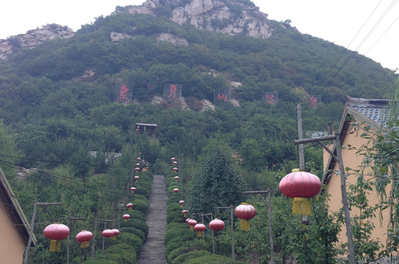
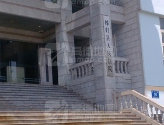
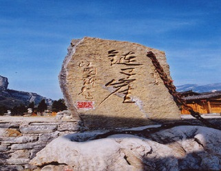

热门搜索：
望归亭
三峡链子崖景区
香溪河
首页
百科分类
词条分类
行政区域类
行政区域
非行政区域类
地片
边贸区、口岸
工业区、开发区
军事区
矿区
区片
...
群众自治组织类
群众自治组织
群众自治组织类其他
居民点类
居民点
居民点类其他
交通运输设施类
街、巷
公路
航空港
火车站
水运港口
隧道
铁路
...
水利电力设施类
发电站
池塘、海塘
堤堰
输变电站
水库
通信基站
运河
...
纪念地旅游景点类
纪念地、遗址
公园、风景区
自然保护区
宗教纪念地
...
建筑物类
广场、体育场
城堡、墙
亭、台、碑、塔
房屋
建筑物类其他
单位类
单位
单位类其他
陆地水系类
河流
河口
湖泊
陆地岛屿类其他
陆地水系类其他
三角洲
峡谷
...
陆地地形类
山
山峰
洞穴
平原、盆地
丘陵山地
森林
湿地（沼泽）
苔原
...
推荐词条
更多>>

茶树坪
归州社区居民委员会

秭归县人民法院
小秋谷山
上和坪隧道
精彩词条
更多>>

三峡链子崖景区
地名来历 地名含义 历史沿革 地理实体描述 其它信息
阅读全文>>
牛岭村移民文体广场
: 地名来历 地名含义 历史沿革 地理实体描述 其它信息
香溪河
: 地名来历 地名含义 历史沿革 地理实体描述 其它信息
中心观村村民委员会
: 地名来历 地名含义 历史沿革 地理实体描述 其它信息
美座峡
: 地名来历 地名含义 历史沿革 地理实体描述 其它信息
三金宾馆
: 地名来历 地名含义 历史沿革 地理实体描述 其它信息
热门词条
更多>>
望归亭
地名来历 地名含义 历史沿革...[
详细
]
良斗河
地名来历 地名含义 历史沿革...[
详细
]
最近更新
更多>>
屈原镇农贸市场
03-25 17:57
大水田坪
03-25 17:23
大河口桥
03-23 14:39
茅坪镇
07-23 14:39
梅坪基站
03-23 14:39
王克诗烈士之墓
03-23 14:39
友情链接: